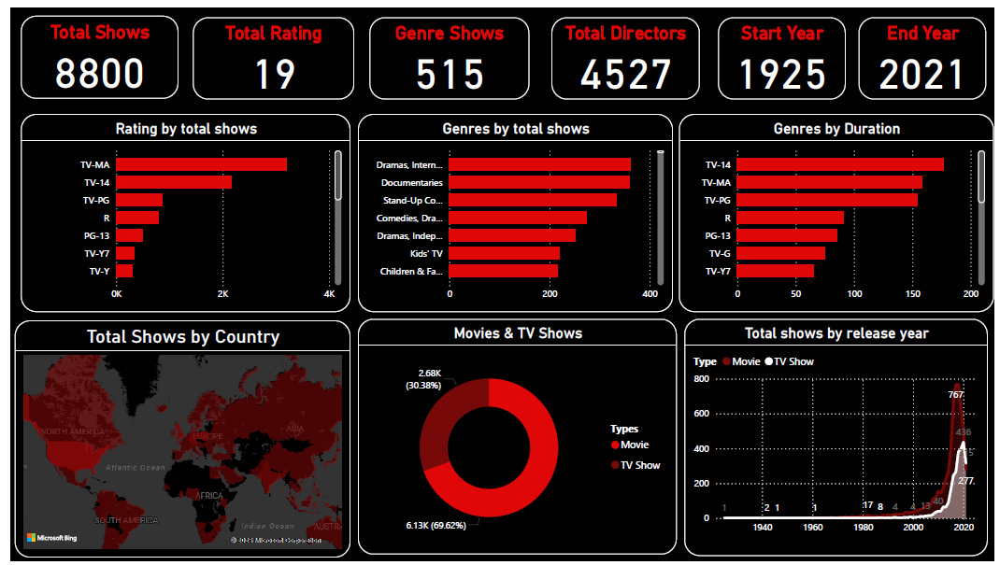

About Data
My objective here is to utilize most PowerBI features which I had learned using different online course. I am curious in curating data and analysis. Such kind of mini projects (self made) is allowing to think and progress. As a part of my job I do regular data analysis and visualization techniques, However, I felt this isnt enough to showcase my talent.Hence I utilized open source platform to collect the raw data to analyse and build a dashboard.
This dashboard consists of few aspects based on the questions.
- What is the data all about ?
- How the data could be categorized ?
- Within the categorization is there any dependency or relation between the data ?
- What is the outcome ?
Results
Netflix Data Analysis : This dashboard provides a comprehensive analysis of a Netflix dataset, covering key metrics and trends related to shows and movies. The design is clean, with a dark theme and prominent visuals that make the data easy to interpret.
Key Performance Indicators (KPIs) - Top Row
The top row of the dashboard presents high-level summary statistics, providing an immediate overview of the entire dataset.
Total Shows: 8800 - This represents the total number of unique shows and movies in the dataset.
Total Rating: 19 - This likely refers to the number of distinct or unique ratings (e.g., TV-MA, PG-13, TV-G) present in the data..
Genre Shows: 515 - This could indicate the total number of unique genres available across all shows and movies
Total Directors: 4527 - The total number of unique directors represented in the dataset.
Start Year: 1925 - The earliest release year in the dataset. This is a very old title, possibly a historical documentary or a classic film that has been added to the platform.
End Year: 2021 - The latest release year in the dataset, which aligns with the typical end date for many Netflix datasets available publicly
Detailed Visualizations - Middle Row
This row features three bar charts that break down the data by key categories.
Rating by total shows : This horizontal bar chart shows the distribution of shows based on their maturity rating. TV-MA has the highest number of shows, followed by TV-14 and TV-PG. This indicates that a significant portion of the Netflix library is geared toward mature audiences.The ratings PG-13, TV-Y7, TV-Y, and OK show progressively fewer shows.
Genres by total shows : This chart displays the top genres based on the number of shows. Dramas, International Movies is the leading genre. This is followed by Documentaries and Stand-Up Comedy, suggesting a strong presence of non-fiction and comedic content on the platform.
Genres by Duration : This bar chart likely shows the total duration (or number of titles) for each rating category. It appears to be another view of the Rating by total shows chart, showing the same order and distribution.
Detailed Visualizations - Bottom Row
This row provides different perspectives on the data, including geographical distribution and a time-series analysis.
Total Shows by Country : This world map visualization highlights countries with the most shows.
The darker red shading indicates a higher concentration of content. The map clearly shows that North America (especially the USA) and parts of Europe and Asia (particularly India) have the highest number of shows. This reflects the key markets where Netflix has a large content library.
Movies & TV Shows : This donut chart provides a simple and effective breakdown of the content type.
6.13K (69.62%) - The vast majority of the content is classified as Movies.
2.68K (30.38%) - A smaller but still significant portion is classified as TV Shows. This shows that Netflix's library is predominantly film-based.
Total shows by release year: This line chart visualizes the number of new releases over time, broken down by Type (Movie vs. TV Show).
The horizontal axis represents the Release Year, spanning from 1940 to 2020
The chart shows a slow and steady increase in releases from the 1940s to the 1990s.
A massive surge in content, particularly for Movies, is visible from the early 2000s, with an explosive growth peak around 2018-2020.
The peak year for releases seems to be 2018 with 767 shows, followed by 2019 an 2020. This trend highlights Netflix's aggressive content acquisition and production strategy in recent years.